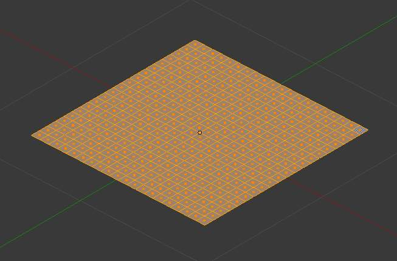
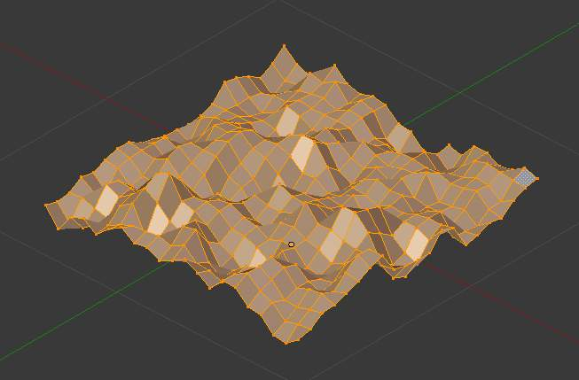

Noise¶
参考
Note
Noise is an old feature. The Displace Modifier is a non-destructive alternative to the Noise tool and is a more flexible way to realize these sort of effects. The key advantages of the modifier are that it can be canceled at any moment, you can precisely control how much and in which direction the displacement is applied, and much more.... See also the “ANT Landscape” add-on.
The Noise function allows you to displace vertices in a mesh based on the grey values of the first texture slot of the material applied to the mesh.
The mesh must have a material and a texture assigned to it for this tool to work. To avoid having the texture affect the material’s properties, it can be disabled in the texture menu.
The Noise function displaces vertices along the object’s ±Z-Axis only.
Noise permanently modifies your mesh according to the material texture. Each click adds onto the current mesh. For a temporary effect, map the texture to Displacement for a render-time effect. In 物体模式 or 编辑模式, your object will appear normal, but will render deformed.
The deformation can be controlled by modifying the Mapping panel and/or the texture’s own panel (e.g. Clouds, Marble, etc.).

Mesh before noise is added. |

Mesh after noise is added, using basic cloud texture. |
{kind=link}
{kind=link}